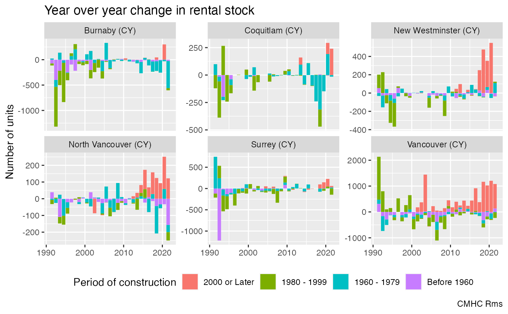
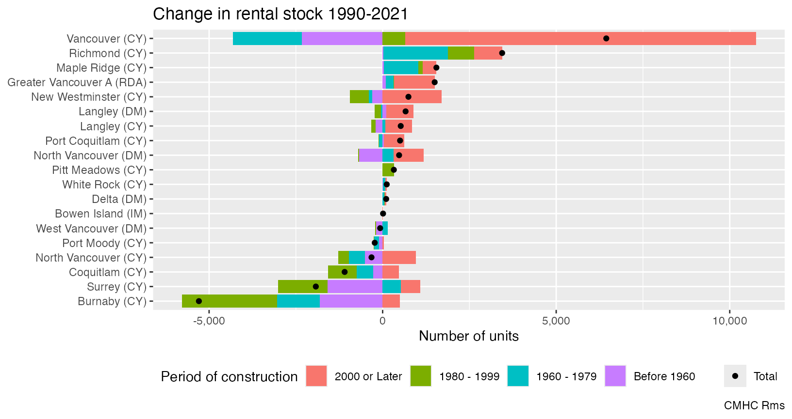
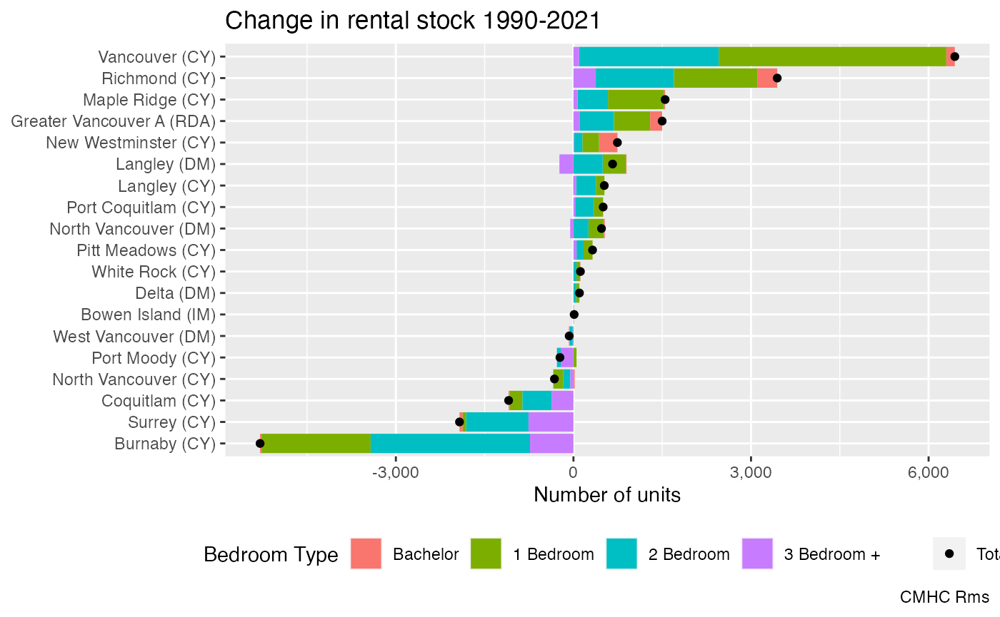

library(cmhc)
library(ggplot2)
library(dplyr)
#>
#> Attaching package: 'dplyr'
#> The following objects are masked from 'package:stats':
#>
#> filter, lag
#> The following objects are masked from 'package:base':
#>
#> intersect, setdiff, setequal, unionTo understand how many purpose built rental units got constructed and torn down in each Metro Vancouver municipality query the rental universe for Metro Vancouver census subdivisions by period of construction for all years from 1990 to 2021.
rental_data <- seq(1990,2021) |>
lapply(function(y)get_cmhc("Rms","Rental Universe","Year of Construction","Census Subdivision",
geo_uid="59933",year=y)) %>%
bind_rows() Computing year over year differences we can see how the stock has changed in the top municipalities. Over this time period the municipal status of some of the municipalities changed and we make the necessary adjustments. If we assume that periods did not get torn down in the same age bracked as they got built we can interpret this as gross flows.
Sometimes units move in and out of the universe because of extensive renovations, and it will appear that we add old buildings. Another way how we have added old buildings to the rental universe is hotel conversions. So our proxy of using period of construction is not perfect, but ballpark estimates are about right.
rental_data %>%
filter(!is.na(`Census Subdivision`)) %>%
mutate(Name=gsub("\\(C\\)","(CY)",`Census Subdivision`)) %>%
mutate(Name=recode(Name,
"Burnaby (DM)"="Burnaby (CY)",
"Coquitlam (DM)"="Coquitlam (CY)",
"Surrey (DM)"="Surrey (CY)")) %>%
filter(Name %in% (filter(.,`Year of Construction`=="Total",Date==max(Date)) %>%
slice_max(Value,n=6) %>%
pull(Name))) %>%
filter(`Year of Construction`!="Total") %>%
group_by(Name,`Year of Construction`) %>%
mutate(Change=Value-lag(Value,order_by = Date)) %>%
mutate(`Year of Construction`=factor(`Year of Construction`,levels=rev(levels(`Year of Construction`)))) %>%
ungroup() %>%
filter(Date!=min(Date)) %>%
ggplot(aes(x=Date,y=Change,fill=`Year of Construction`)) +
geom_bar(stat="identity") +
facet_wrap(~Name,scales="free_y") +
theme(legend.position = "bottom") +
labs(title="Year over year change in rental stock",
y="Number of units",
x=NULL,
fill="Period of construction",
caption="CMHC Rms")
#> Warning: Removed 30 rows containing missing values or values outside the scale range
#> (`geom_bar()`).
We can also look at the total change over this timeframe to understand gross flows.
rental_data %>%
filter(!is.na(`Census Subdivision`)) %>%
mutate(Name=gsub("\\(C\\)","(CY)",`Census Subdivision`)) %>%
mutate(Name=recode(Name,
"Burnaby (DM)"="Burnaby (CY)",
"Coquitlam (DM)"="Coquitlam (CY)",
"Surrey (DM)"="Surrey (CY)")) %>%
filter(Name %in% (filter(.,`Year of Construction`=="Total",Date==max(Date)) %>%
slice_max(Value,n=20) %>%
pull(Name))) %>%
filter(Date==max(Date)|Date==min(Date)) %>%
group_by(Name,`Year of Construction`) %>%
mutate(Change=coalesce(Value,0)-coalesce(lag(Value,order_by = Date),0)) %>%
ungroup() %>%
filter(Date==max(Date)) %>%
mutate(Name=factor(Name,levels=filter(.,`Year of Construction`=="Total") |> arrange(Change) |> pull(Name))) %>%
mutate(`Year of Construction`=factor(`Year of Construction`,levels=rev(levels(`Year of Construction`)))) %>%
ggplot(aes(y=Name,x=Change,fill=`Year of Construction`)) +
geom_bar(data=~filter(.,`Year of Construction`!="Total"), stat="identity") +
geom_point(data=~filter(.,`Year of Construction`=="Total"),
aes(colour=`Year of Construction`),fill="black") +
theme(legend.position = "bottom") +
scale_colour_manual(values=c("Total"="black")) +
scale_x_continuous(labels=scales::comma) +
labs(title="Change in rental stock 1990-2021",
x="Number of units",
y=NULL,colour=NULL,
fill="Period of construction",
caption="CMHC Rms")
Over this timeframe the City of Vancouver has added the most rental units, and Burnaby has torn down the most.
Another way to slice the data is to look at the net change by number of bedrooms.
rental_data <- c(1990,2021) |>
lapply(function(y)get_cmhc("Rms","Rental Universe","Bedroom Type","Census Subdivision",
geo_uid="59933",year=y)) %>%
bind_rows()
rental_data %>%
filter(!is.na(`Census Subdivision`)) %>%
mutate(Name=gsub("\\(C\\)","(CY)",`Census Subdivision`)) %>%
mutate(Name=recode(Name,
"Burnaby (DM)"="Burnaby (CY)",
"Coquitlam (DM)"="Coquitlam (CY)",
"Surrey (DM)"="Surrey (CY)")) %>%
filter(Name %in% (filter(.,`Bedroom Type`=="Total",Date==max(Date)) %>%
slice_max(Value,n=20) %>%
pull(Name))) %>%
filter(Date==max(Date)|Date==min(Date)) %>%
group_by(Name,`Bedroom Type`) %>%
mutate(Change=coalesce(Value,0)-coalesce(lag(Value,order_by = Date),0)) %>%
ungroup() %>%
filter(Date==max(Date)) %>%
mutate(Name=factor(Name,levels=filter(.,`Bedroom Type`=="Total") |> arrange(Change) |> pull(Name))) %>%
ggplot(aes(y=Name,x=Change,fill=`Bedroom Type`)) +
geom_bar(data=~filter(.,`Bedroom Type`!="Total"), stat="identity") +
geom_point(data=~filter(.,`Bedroom Type`=="Total"),
aes(colour=`Bedroom Type`),fill="black") +
theme(legend.position = "bottom") +
scale_colour_manual(values=c("Total"="black")) +
scale_x_continuous(labels=scales::comma) +
labs(title="Change in rental stock 1990-2021",
x="Number of units",
y=NULL,colour=NULL,
fill="Bedroom Type",
caption="CMHC Rms")
There are no radical shifts in bedroom types, most municipalities that overall lost rental units lost units of all bedroom types, and municipalities that added rental units added units of all types. On net Vancouver gained mostly 1 and 2 bedroom units, Burnaby lost units of all bedroom types.